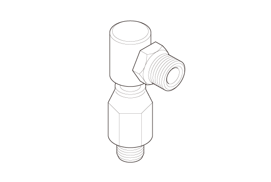
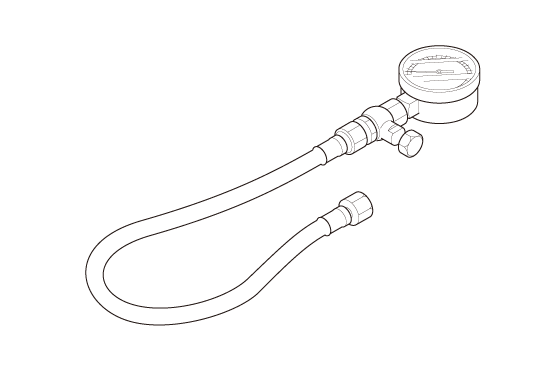

LEMON Manuals
: Even more car manuals for everyone: 1960-2025
Home
>>
Honda
>>
2016
>>
Civic LX, 4D Sedan, Automatic CVT Trans
>>
Repair and Diagnosis
>>
Engine Mechanical
>>
Lubrication System
>>
Lubrication System - Testing & Troubleshooting
>>
Test
>>
Engine Oil Pressure Test (1.5L Engine)
>>
Notes
Engine Oil Pressure Test (1.5L Engine): Notes
Special Tools Required
Image
Description/Tool Number

Courtesy of HONDA, U.S.A., INC.
Oil Pressure Gauge Attachment PT1/8 07510-MA70000

Courtesy of HONDA, U.S.A., INC.
Oil Pressure Gauge 07506-3000001